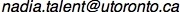

Sexually reproducing
diploid Crataegus (C. punctata)
Male-sterile, facultatively apomictic
triploid Crataegus (C. ?grandis)
Near-obligate apomictic tetraploid
Crataegus (C. chrysocarpa)
Apomictic pentaploid Crataegus
(aff. C. suksdorfii)
Zarrei, Mehdi, Nadia Talent, Maria Kuzmina, Jeanette Lee, Jensen Lund, Paul R. Shipley, Saša Stefanović, Timothy A. Dickinson 2015. DNA barcodes from four loci provide poor resolution of taxonomic groups in the genus Crataegus. AoB Plants. Abstract. Advance access. doi:10.1093/aobpla/plv045.
Burgess, Michael, Kevin R. Cushman, Eric T. Doucette, Nadia Talent, Christopher T. Frye, Christopher S. Campbell 2014. Effects of apomixis and polyploidy on diversification and geographic distribution in Amelanchier (Rosaceae). American Journal of Botany 101(8): 1375-1387. doi:10.3732/ajb.1400113.
Talent, Nadia, Richard B. Dickinson, and Timothy A. Dickinson 2014. Character Selection During Interactive Taxonomic Identification: "Best Characters". Biodiversity Informatics 9: 1-12. Open access.
Christensen, Knud Ib, Mehdi Zarrei, Maria Kuzmina, Nadia Talent, Charlotte Lin, and Timothy A. Dickinson 2014. Crataegus ×nina-celottiae and C. ×cogswellii (Rosaceae, Maleae), two spontaneously formed intersectional nothospecies. PhytoKeys 36: 1–26. doi:10.3897/phytokeys.36.6784
Christensen, Knud Ib and Nadia Talent 2013. Crataegus laevigata or C. levigata — a Paleographic Analysis. Phyton: Annales Rei Botanicae 52(2): 195-201. Available from the second author upon request (see e-mail address below).
Edwards, Jennifer E., Paula N. Brown, Nadia Talent, Timothy A. Dickinson, and Paul R. Shipley 2012. A review of the chemistry of the genus Crataegus. Phytochemistry 79: 5-26. doi: 10.1016/j.phytochem.2012.04.006. Abstract | Abstract at PubMed.
Talent, Nadia 2009. Evolution of gametophytic apomixis in flowering plants: an alternative model from Maloid Rosaceae. Theory in Biosciences 128(2): 121-138. Published online 5 Mar 2009. doi: 10.1007/s12064-009-0061-4 Abstract | PDF (pre-publication version, author's copyright) | Supplementary material (PDF)
Dickinson, Timothy A., Eugenia Y.Y. Lo, Nadia Talent, and Rhoda M. Love 2008. Black-fruited hawthorns of Western North America — one or more agamic complexes? Botany 86(8), 846-865.| Open access.
Talent, Nadia, James E. Eckenwalder, Eugenia Lo, Knud Ib Christensen, and Timothy A. Dickinson 2008. (1847) Proposal to conserve the name Crataegus against Mespilus (Rosaceae). Taxon 57(3), 1007-1008.
Talent, Nadia and Timothy A. Dickinson 2007. The potential for ploidy level increases
and decreases in Crataegus
(Rosaceae, Spiraeoideae, tribe Pyreae).
Botany 85(6), 570-584.
Open access.
Erratum to this paper: Page 577 Caption to figure 2 should read:
Open circles, pollen from the tetraploid was used; solid circles,
pollen from the diploid was used.
Talent, Nadia and Timothy A. Dickinson 2007. Apomixis and hybridization in Rosaceae subtribe Pyrineae Dumort.: a new tool promises new insights. In Apomixis: Evolution, Mechanisms and Perspectives, edited by E. Hörandl, U. Grossniklaus, P. J. Van Dijk, and T. Sharbel. Regnum Vegetabile 147, International Association for Plant Taxonomy (Vienna, Austria) and A. R. G. Gantner Verlag (Rugell, Liechtenstein), distributed by Koeltz Scientific Books (Koenigstein, Germany), pp. 301-316.
Talent, Nadia and Timothy A. Dickinson 2007. Endosperm formation in aposporous Crataegus (Rosaceae, Spiraeoideae, tribe Pyreae): parallels to Ranunculaceae and Poaceae. New Phytologist, 173(2): 231-249. Open access.
Dickinson, Timothy A., Eugenia Lo, and Nadia Talent 2007. Polyploidy, reproductive biology, and Rosaceae: understanding evolution and making classifications. Plant Systematics and Evolution. 266(1-2): 59-78. Abstract.
Talent, Nadia and Timothy A. Dickinson 2005. Polyploidy
in Crataegus
and Mespilus (Rosaceae,
Maloideae): evolutionary inferences from flow cytometry of nuclear DNA
amounts.
Botany 83(10)>:1268-1304.
Open access.
Erratum to this paper:
Crataegus okennonii is in series Douglasianae sens. str., not series
Purpureofructi; see:
Phipps, J.B., O'Kennon, R.J. 1998. Three new species of Crataegus
(Rosaceae) from Western North America: C. okennonii, C. okanaganensis, and C. phippsii.
Sida Contributions to Botany 18(1): 169-191.
Talent, Nadia 2006. Gametophytic apomixis, hybridization, and polyploidy in Crataegus (Rosaceae), PhD thesis, University of Toronto, Department of Botany. (Supervisor: TimothyA. Dickinson.) Abstract.
Talent, Nadia 1998. Quantitative traits from leaf morphology in some North American species and hybrids of Populus sections Aigeiros and Tacamahaca (Salicaceae). MSc thesis, University of Toronto, Department of Botany. (Supervisor: James E. Eckenwalder .).
Research Associate, Royal Ontario Museum
Green Plant Herbarium (TRT)
Department of Natural History
100 Queen's Park
Toronto, M5S 2C6, Canada
E-mail: 
{kind=link}
{kind=link}
{kind=link}
{kind=link}